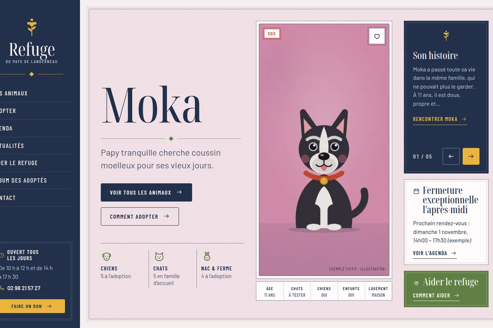
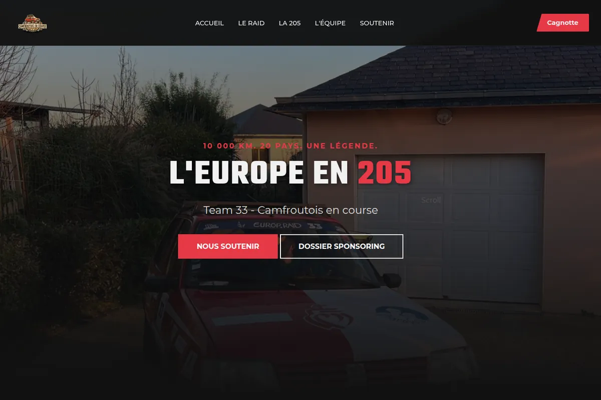
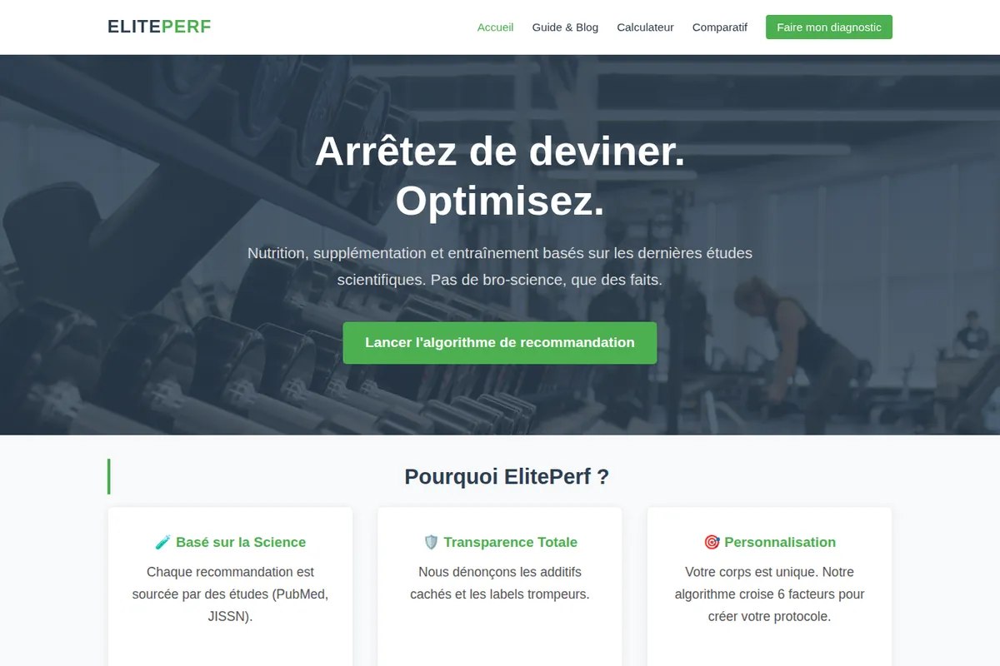
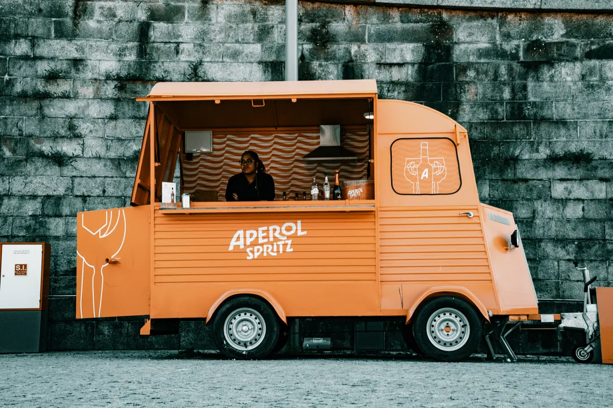

Refuge du Pays de Landerneau
Site public et back‑office des bénévoles d'un refuge animalier : adoptions, agenda, actualités, messagerie, comptes et rôles.
Chez Alcatel‑Lucent Enterprise, je développe depuis 2025 un système où des agents spécialisés coopèrent pour répondre aux questions à partir de la documentation produit.
L'orchestrateur la reçoit et répartit le travail entre des agents spécialisés.
Des agents parcourent la documentation produit par web scraping.
Chaque page est vectorisée : le sens devient une position dans l'espace.
Les agents interrogent la base vectorielle et assemblent la réponse.
La documentation est rassemblée par web scraping.
Elle est vectorisée pour être recherchée par le sens.
Les agents interrogent une base vectorielle et construisent la réponse.
Alcatel‑Lucent Enterprise · projet démarré en 2025 · code propriétaire, non public.
Mon assistant connaît mon parcours et mes projets. Il répond en quelques secondes.
Réponses générées par IA (GPT‑4o mini), elles peuvent contenir des erreurs.
Du code en production dans une grande entreprise, des sites pour des proches et des associations, des projets d'études.

Site public et back‑office des bénévoles d'un refuge animalier : adoptions, agenda, actualités, messagerie, comptes et rôles.

Le site de l'équipage « Camfroutois en course » : 10 000 km à travers l'Europe en 205, avec 70 kg de matériel pour des écoles.
Analyse réseau en temps réel, avec des modèles probabilistes qui détectent les anomalies dans les flux.

Un site sport et nutrition fondé sur les études : calculateur, simulateur, comparatif et blog.
Le projet phare : un système multi‑agent pour OmniVista Network Advisor.
Le site vitrine d'un studio de communication en Bretagne : services, tarifs, contact.
Un portfolio complet pour une étudiante en information‑communication, pensé pour l'esthétique et la lecture.
Une plateforme B2B pour agences immobilières, avec une IA qui rédige les descriptions de biens.
Un scraper qui surveille les nouvelles annonces d'appartements.
Le site que vous lisez, avec son assistant IA intégré.
Quels sports privilégier pour ouvrir une enseigne ? Analyse des licences sportives (data.gouv.fr) dans un dashboard interactif.
Recommandation musicale à partir d'un questionnaire : traitement des réponses et visualisation des corrélations.
Aide à la décision à partir de modèles statistiques classiques appliqués à des données sportives.
Une application web full‑stack qui recense les activités d'une région, avec back‑office.
Un moteur de Sudoku avec une interface graphique complète.
Le problème des N‑Dames résolu par backtracking optimisé.
Un jeu de plateau pédagogique pour le BUT Informatique, de la conception à la production.
Un remake « suédé » d'American Psycho : écriture, tournage et montage.
Voyages, meetings aériens, rallyes. Patience, précision, et l'œil sur le cadre.
Ouvrir la galerie
Je suis développeur logiciel chez Alcatel‑Lucent Enterprise. J'y suis entré en alternance pendant mon BUT Informatique à l'IUT de Lannion ; j'y travaille aujourd'hui en intérim, sur un chatbot multi‑agent pour OmniVista Network Advisor.
Le reste du temps, je construis des sites pour des proches et des associations, je photographie, et je m'entraîne. Même méthode partout : répéter, mesurer, corriger.